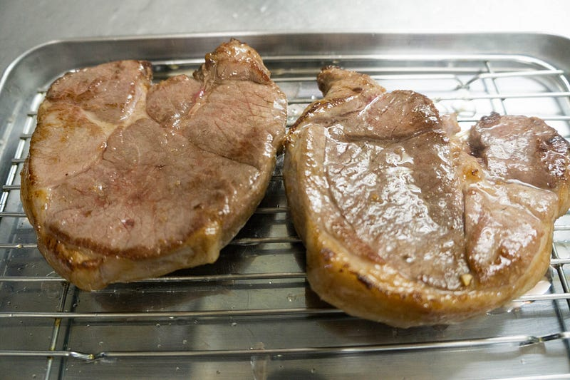
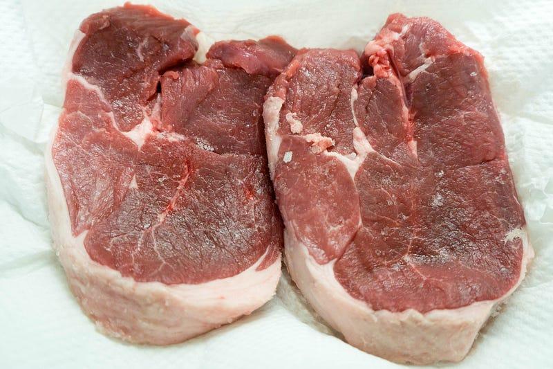
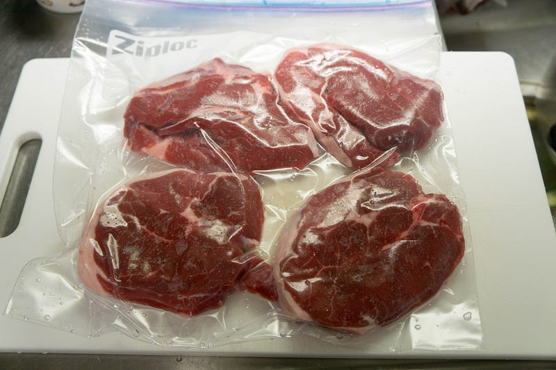
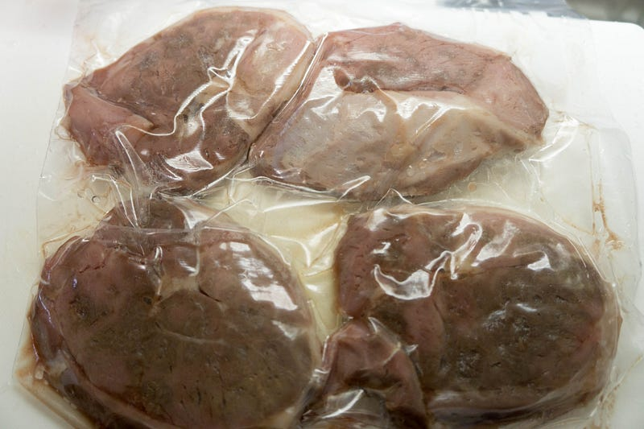
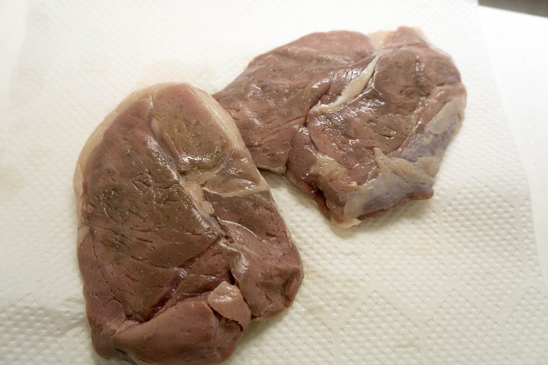
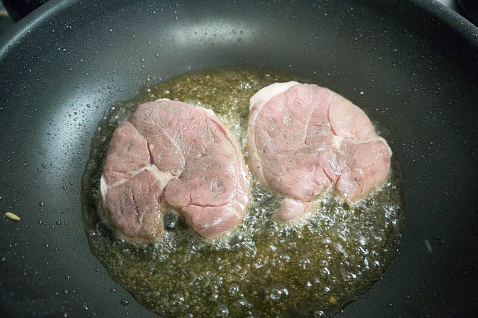
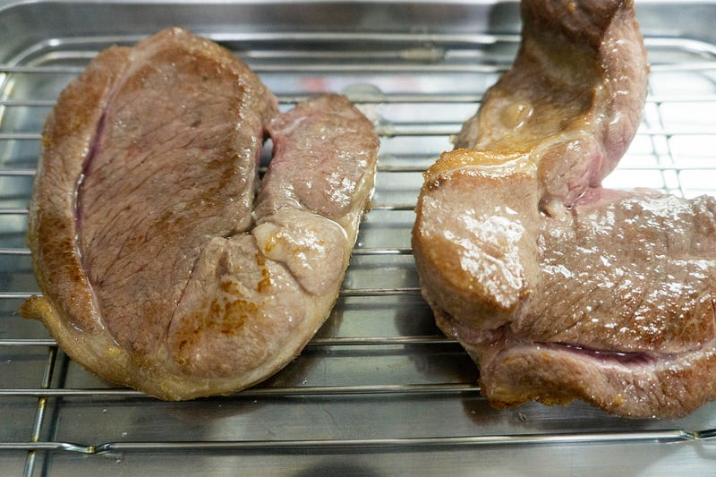
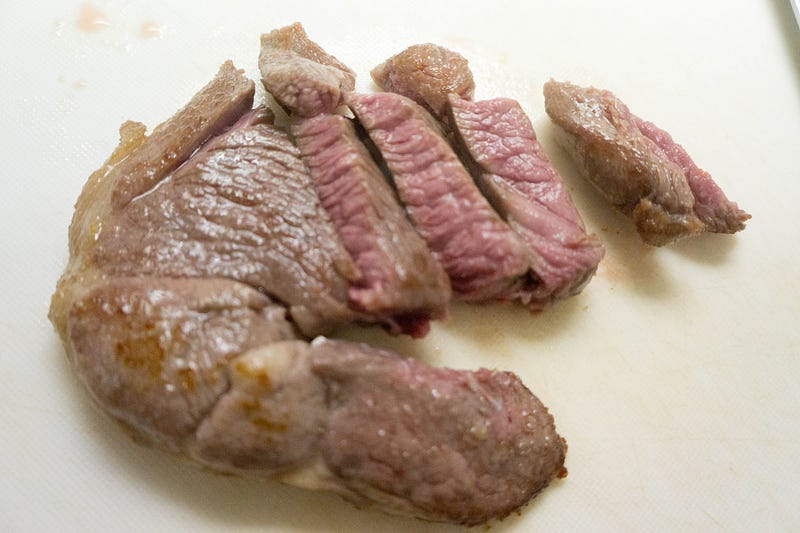
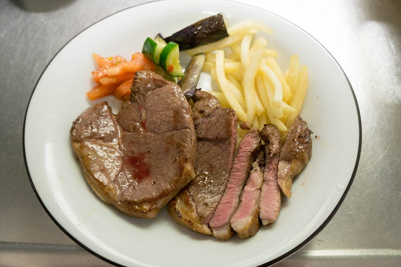

anovaでラムステーキ
anovaでラムステーキ
雨が降っててハナマサまで行くの面倒だな… そうだ、近所のスーパーならラム肉が何故か豊富だから、ラムロースステーキにしよう！

前回はこちら
今回のやり方は基本的にこちらのオージービーフのステーキと一緒。

塩をして、ドリップを拭いておきます。

水圧を使って詰めます。anova設定は55℃で30分。

相変わらずおいしくなさそうな色… 焼くと変わるとは分かってはいるが…

水気を切ります。

チンチンに熱しておくことができるフライパンがないのは相変わらずなので、高熱の油で両面に焼き色をつけます。

ちょっとカパーっとなった。

良い色。

できあがり。付け合わせはトマトとキュウリのピリ辛サラダ、茄子の素揚げ、ポテトフライ。
早速食べてみる。む！柔らかい！そしてラムの独特の匂いが少し抑えられてるかな…？なお、今回はラム肉4枚で800円ほど。電気代とかはかかってるのでなんとも言えないですが、なんとなく満足感がすごい。
子供達もぱくぱく食べてくれた。やはりステーキは低温調理の真骨頂だなー。最高です。
New: Anova Precision Cooker - WIFI 2nd Gen (900 Watts)
※ WiFi タイプになります。900W スマホと連動してお鍋の水温をコントロール。どこからでも調理 ポンプ速度：毎分7〜8リットル、360度回転のポンプ アプリで操作可能 設定温度に達したらスマホにお知らせ アプリはAppストアUSな…amzn.to
※ WiFi タイプになります。900W スマホと連動してお鍋の水温をコントロール。どこからでも調理 ポンプ速度：毎分7〜8リットル、360度回転のポンプ アプリで操作可能 設定温度に達したらスマホにお知らせ アプリはAppストアUSな…amzn.to
次はこちら